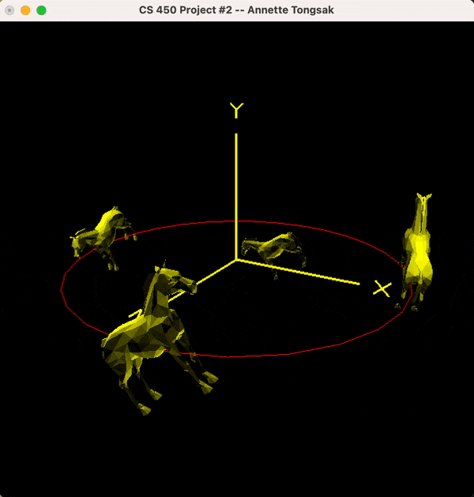

CS 450/550 - Introduction to Computer Graphics
C / C++ / OpenGL / GLSL
Here are all my projects from CS 450 - Introduction to Computer Graphics with Dr. Mike Bailey. I learned a lot about the graphics pipeline and how to implement iconic CG effects, from lighting to texture mapping to shaders, in C++ with OpenGL and GLSL.
Check out the GitHub repository here!
To kick off our exploration into computer graphics, everyone was tasked with drawing something cool using OpenGL. I decided to make Doraemon out of OSU spheres, cylinders, curved line strips, and BoxLists! I call this piece "Doraemon Coming Out of Nobita's Desk."



This is another project where we had free range to do whatever we wanted as long as we met the requirements. We had to animate 8 quantities, each with at least 6 defining keytimes.


My final project was inspired by a video of Pixar's cobweb generation program for Toy Story 4 and DreamWorks' 2011 paper, “Building and Animating Cobwebs for Antique Sets.” This project taught me a lot about the math behind implementing parabolas in 3D space. You can learn more about it here.